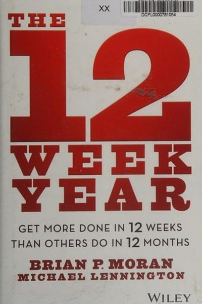

Library › Productivity
The 12 Week Year — Summary & Key Lessons

Most people take 12 months to do what they could do in 12 weeks — if they treated every week like it mattered.
📖 OPEN THE FULL INTERACTIVE BREAKDOWN →🌐 Read it in Hindi, Hinglish, Gujarati, Tamil & 22 more languages — free, with audio.
💡 The Big Idea
The problem with annual goals: 11 months of slack. Moran and Lennington's fix is brutal and effective — treat 12 weeks as one year: define a 12-week vision, break it into weekly plans, track lead (not lag) indicators on a public scoreboard, and meet a weekly accountability partner. When the 'year' is only 84 days long, urgency is automatic — and people consistently achieve in 12 weeks what they planned for 12 months.
🧠 The 5 Key Lessons
Lesson 1: Compress Your Year: 12 Weeks, Not 12 Months
The Challenge
Annual planning has a built-in failure: a 12-month horizon feels so far away that urgency never arrives until December. Compressing the 'year' to 12 weeks changes the psychology — you can see the finish line, deadlines feel real, and you get 4 'years' of learning and momentum per calendar year instead of one.
📖 Example: Moran's clients — from Fortune 500 teams to solo founders — routinely produce in one 12-week cycle what their annual plans promised for the year: a sales team Moran coached hit its yearly number in the first 12-week period. Read the full example →
⚡ Do this: Pick ONE goal you've been 'going to do this year.' Redefine it as a 12-week deadline: what exactly will be true 84 days from today?
Lesson 2: Vision First, Then Goals
The Vision
Before goals, write your 12-week vision: a vivid, first-person description of your life and work at the end of the 12 weeks — who you are, what you've built, how it feels. The vision creates emotional pull; goals convert it into targets. A goal without a vision is a chore; a vision without goals is a daydream.
📖 Example: Moran's top performers write their vision as a letter to themselves dated 12 weeks out — then derive exactly 3–5 goals from it, each measurable ('I have 40,000 followers' or 'I've shipped the beta'), each tied to a number. Read the full example →
⚡ Do this: Write a 100-word letter from your future self, dated 84 days from today. Underline the three measurable results in it — those are your goals.
Lesson 3: Lead Indicators Beat Lag Indicators
Weekly Execution
Lag indicators (revenue, weight, sales) tell you the outcome — too late to change it. Lead indicators (calls made, workouts done, pages written) drive the outcome and can be executed this week. The 12 Week Year runs on weekly plans of lead actions: every Sunday, block your week with the specific actions that will move your goals.
📖 Example: A struggling sales team Moran coached stopped measuring 'deals closed' (lag) and started measuring 'qualified conversations' (lead) — within weeks, the lag number followed the lead number upward. Read the full example →
⚡ Do this: For each 12-week goal, write your 2 lead indicators. This Sunday, schedule next week's lead actions into your calendar like appointments.
Lesson 4: The Scoreboard Makes It Real
The Scoreboard
What gets measured gets managed — and what gets SEEN gets done. The 12 Week Year requires a public scoreboard: your weekly lead actions, visible and tracked, with a simple 'on track / off track' read. Public tracking creates the honesty loop: you can't quietly drift for three weeks and call it a year.
📖 Example: Moran's teams put scoreboards on office walls with a weekly tally; individuals keep theirs on the fridge or as a pinned note. The teams that kept the board visible hit their numbers; the ones that 'didn't have time' for the board didn't. Read the full example →
⚡ Do this: Create your scoreboard today: one page (paper or digital) with your lead actions and a checkbox per week. Put it where you'll see it daily.
Lesson 5: Accountability: The Weekly Partner Meeting
Accountability
The final pillar is a weekly accountability session — 15–30 minutes with a partner (or a group) where you report your score: what you committed to, what you did, what you'll do next week. Knowing you'll report makes the week's choices sharper. Ownership is the flip side: you don't blame circumstances — you own the results and adjust the plan.
📖 Example: Moran reports that people in accountability groups complete dramatically more than solo planners — one executive who had never finished a fitness program finished 3 full 12-week cycles with a weekly partner call. Read the full example →
⚡ Do this: Find one accountability partner this week. Book a fixed 20-minute weekly call: report your scoreboard, commit to next week's lead actions.
✅ 5-Step Action Plan
- Pick one goal and give it an 84-day deadline.
- Write your 100-word future-self letter; extract 3 measurable goals.
- Define 2 lead indicators per goal — actions you control.
- Build a visible weekly scoreboard and check it daily.
- Book a weekly accountability call with a partner — and never miss it.
💬 Best Quotes from The 12 Week Year
- “The present moment is where the future is won or lost.”
- “What you do today matters — because you're exchanging a day of your life for it.”
- “Most people don't fail at execution; they fail at the system.”
Interactive version: mark lessons as read, listen in your language, share quote cards.